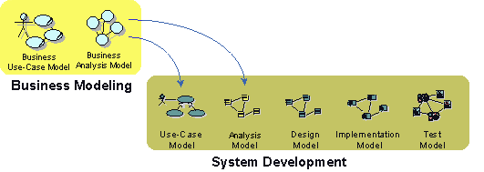
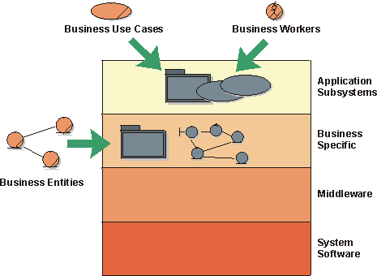
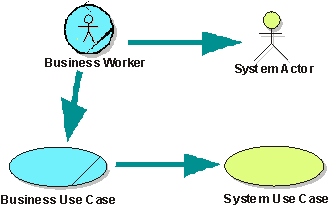
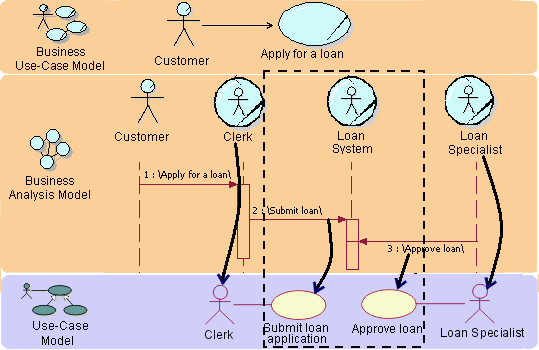
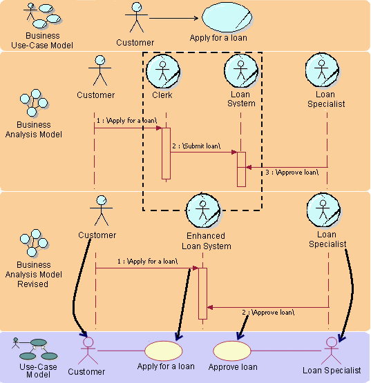
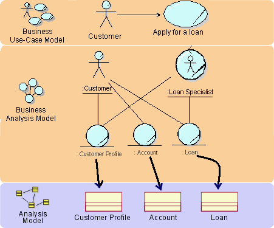
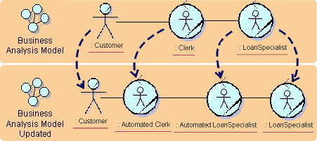

| Рекомендация: Going from Business Models to Systems |
 |
|
| Связанные элементы |
|---|
IntroductionThe approach to business modeling presented in the Rational Unified Process includes a concise and straightforward way to generate requirements for supporting business tools or systems. A good understanding of business processes is important for building the right systems. Even more value is added if you use people's roles and responsibilities, as well as definitions of what "things" are handled by the business as a basis for building the system. It's from this more internal view of the business, captured in a business analysis model, that you can see the tightest link to what the models of the system needs to look like.  The relation between models of the business and models of a supporting information system Business Models and System ArchitectureFrom an architectural perspective, having business models in place is particularly useful if your intent is to build one of the following kinds of systems:
The business models give input to the use-case view and the logical view as presented in the analysis model. You can also find key mechanisms at the analysis level, which are referred to as analysis mechanisms. The following should be considered:
 In a four-layered system architecture, business models give input to the top two layers Business Models and Actors to the System For each business worker, identify a candidate system actor. For each business use case the business worker participates in, create a candidate system use case. To identify information-system use cases, begin with the business workers in the business analysis model. For each business worker, perform the following steps:
For each business use case realization, perform the following steps:
Note that this is just a starting point for the system's use-case model. As the requirements from the system's perspective are better understood, these initial system actors and use cases will be refactored as needed. Example: The figure below gives an example on how to derive the system use case for the "Apply for a loan" business use case realization. The dotted lines in the figure mark the boundaries of the system that will be considered.  Based on business models of a bank, you can derive candidate system actors and system use cases. Automated Business WorkersIf you are aiming at building a system that completely automates a set of business processes-which is the case if you are building an e-commerce application-for example, it's no longer the business worker who will become the system actor. Instead, it's the business actor who will directly communicate with the system and act as a system actor. You are, in effect, changing the way business is performed when building an application of this kind. Responsibilities of the business worker will be moved to the business actor. Example: When building an e-commerce site for a bank, you will be modifying the way the process is realized.
 Completely automating business workers changes the way the business process is realized, as well as how you find system actors and use cases Business Models and Entity Classes in the Analysis Model
For each business entity, create a class in the system's analysis model A business entity to be managed by an information system will correspond to an entity in the analysis model of the information system. In some cases, however, it might be suitable to let attributes of the business entity correspond to entities in the information-system model. Several business workers can access a business entity. Consequently, the corresponding entities in the system can participate in several information-system use cases. Example:  The business entities Customer Profile, Account, and Loan are all candidates for automation. Business EventsBusiness events identify important occurrences or changes of state in the business. They are used to decouple business use cases and send notifications or triggers about the occurrence or change in state. As such, they are an excellent source for business process automation, to reduce interactions between business workers and speed up business use cases. Automating business events allows for the rapid propagation of important information throughout the business, without burdening business workers with this responsibility. Example:For example, all units involved in a military operation, may need to be notified immediately in the event of a strategic vantage point being claimed by friendly (or hostile) forces. Without automation, this business may be implemented by broadcasting a codeword (such as Top Hat) on a specific radio frequency. It would be left up to all receivers of the codeword to take the necessary action (such as proceeding into the next phase of battle). Automating this business event would allow for more efficient notification of the event, as well as possibly automating the different responses to the event as well. Interaction between Business Workers Translated to System RequirementsHow should you interpret a link between workers in the business model? You must find out how the information systems can support the communicating workers. An information system can eliminate the need to transport information between workers by making the information available in the information system. Using the Business Analysis Model for Resource PlanningIf you intend to use the business analysis model for resource planning or as a basis for simulation, you will need to update it to reflect what types of resources are used. You need to modify it so that each business worker and business entity is implemented by only one type of resource. If your aim is to re-engineer the business process, in the first iteration of your business analysis model, you should not consider resources. Doing so tends to make you focus on the already existing solutions, rather than on identifying problems that can be solved with new kinds of solutions. Here's an example of a procedure to consider:
In the banking example, we decided to update the business analysis model in order to use it for resource planning.
 The business workers are modified to reflect automation Summary TableThe following table summarizes the relationship between the business models and the system models.
|
© Copyright IBM Corp. 1987, 2006. Все права защищены.. |